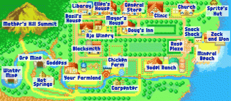
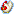

O layout da Cidade Mineral/Mineral Town e um pouco parecido com o do jogo do PlayStation 1, Back to Nature. A vinicola / Aja Winery, A casa de Basil / Basil's House e a biblioteca / Library se mudaram um pouco para o norte, mas o resto esta no mesmo lugar. A unica casa nova e a casa de lanches "Shack" do Kai que fica na Praia Mineral / Mineral Beach.
Your Farmland / Sua Fazenda: Se voce nao tem uma fazenda, nao teria sentido este jogo! Voce vive e trabalha na sua fazenda. A Area tem alojamento para seus animais,um arveore que produz mel todo santo ano e uma grande terra para plantar.
Hot Springs / Fontes Termais: Se voce ficar cansado do trabalho ainda assim voce tera mais trabalho a fazer, entao passe uma hora nas fontes termais. Voce se sentira novinho e apto a trabalhar novamente. Para ir as fontes termais, pegue o caminho sul do caminho para sair da sua fazenda.
Goddess Pond / Lago da Deusa: Voce pode pescar no lago, mas ela prefere que voce jogue oferendas dentro d'agua. Ela aparecera and agradecera por sua doacao. O Lago da Deusa tambem tem um ponto de conexao entre A Wonderful Life do Gamecube e Friends of Mineral Town.
Ore Mine/ Mina de Minerio: Quando voce estiver pronto para fazer um upgrade em seu equipamento, voce vai precisarde um minerio dentro desta mina proxima ao Lago da Deusa. Se voce tiver sorte pode encontrar algumas joias escondidas nas rochas em algumas andares. Clique aqui para mais informacoes
Winter Mine / Mina de Inverno: Na maior parte od ano a mina ecoberta por agua, mas durante o Inverno voce pode caminhar no lago congelado para entrar na mina.Kappa mora neste lago proximo a mina e nao liga se voce jogar um cucumber/pepino ou dois. Clique aqui para mais informacoes sobre esta mina
Mother's Hill Summit / Topo do Morro da Madre: Se voce fizer todo o camino chegando no topo do Mother's Hill, voce podeser uma pequena cidade de Forgotten Valley em uma certa distancia. Poucos eventos ocorrem no topo e sempre e um lugar agradavel para ir se voce deseja observar as nuvens passando.
Carpenter / Carpinteiro: Nos bosques atras da sua fazenda vive Gotz. Ele pode construir extensoes para sua fazenda e celeiros para seus animais. Gotz tambepm vende madeira se voce nao tem o bastante, mas e mais facil cortar os tocos das arvores perto da sua casa. >> Horario da loja: 11am - 04pm,fehcado aos sabados
Chicken Farm / Fazenda das Galinhas: Se voce precisa de uma ave entao va para o fazenda das galinhas.Lila cuida do principal enquanto seu filho Rick faz entregas. A solitaria Popuri mora na fazenda tambem. O marido de Lila atualmente esta fora da cidade a procura de uma cura para sua fragil esposa. » Horario da Loja: 11am - 04pm, fehcado aos domingos >> Clique aqui para a lista de vendas da loja
Blacksmith / Ferreiro: Senhor Saibara vive e trabalha na loja dele. Se voce quiser atualizar suas ferramentas para ficar mais eficiente, traga um minerio da Ore Mine / Mina do Minerio. Ele tambem faz bugigangas para de presentes as garotas/damas. >> Horario da Loja: 10a, - 04pm, fechado as quintas-feiras >>
Yodel Ranch / Rancho YodelQuando voce tiver bastante dinheiro para comprar algumas forragens, va para oRacho e fale com Barley. Ele pode vender para voce algumas vacas e ovelhas. Sua neta May tambem vive com ele. A filha de barley,Joanna, deixou May aos cuidados dele enquanto ele esta expplorando o mundo fora da CIdade Mineral. >> Horarioa da Loja: 10am - 03pm, fechado as segundas-feiras >> Clique aqui para a lista do que venda na loja de Barley
Rosa Plaza / Praca Publica: Se o clima esta bom, voce vai encontrar alguns aldeos batendo papo na praca. Ha tambem anuncios no quadro que lista eventos que virao acontecer e ate mesmo uma lata de lixo que voce pode usar para jogar lixo que voce encontra enquanto pesca. Se voce "arruacar / jogar lixo no chao" do que na lata de lixo etntao afeta a amizade com os aldeos. Ninguem gosta de Arruaca!
Mineral Beach / Praia Mineral: Todo ano muitos eventos ocorrerao no litoral da praia. Quando seu cachorro cresce, voce pode ate mesmo e leva-lo para a praia e brincar e brincar de frisbee com ele.Voce pode ate mesmo jogar seu anjol na agua e esperar pescar um peixe enquanto esta sentado da doca.
Snack Shack / Shack Lanches: Durante a estacao do verao, Kai vem visitar a cidade Mineral e abra seu pequenao cafofo. elevende comidas feitas no verao para voce comer como pizza e milhocozinhado. Ele fecha sua loja na metade do dia e entao abre ela e volta no fim da tarde. Quando o verao acaba, Kai volta para sua casa e o cafe esta fechado pelo resto do ano. >> Horario da Loja: 11am - 05pm - 07pm, fechado aos domingos >> Clique aqui para uma lista de vendas da loja dele
Zack e Won: O companheiro que vem para apanhar seus produtos todo dia agora compartilha sua casa com Won. Se dividir nao e ruim o bastante, Won tem uma loja dentro da casa de Zack. Won vendera plantacoes e sementes de flores que Jeff nao vende na loja. Ele ate mesmo vendo alguns brinquedos para seu cachorrinho. >> Horario da Loja: 11am - 04pm, todo dia exceto feriados >> Clique aqui para uma lista de vendas da loja
Sprite's Hut / Cabana dos Duendes da Colheita: Seus pequenos ajudantes de sua fazenda moram em um minuscula casa proximo a igreja. Durante a estacao da Primavera eles tem uma festa do cha e se voce tiver sorte, voce pode ser convidado ve-la. Se um Duende nao esta trabalhando em sua fazenda ele ficara neste lugar. Eles nao andam por ai pela cidade como o resto dos residentes da aldeia. >> Horario da Loja: 09am - 06pm, todo dia exceto feriados >> Clique aqui para ver a lista de vendas com mais detalhes
Church / IgrejaSe o clima esta agradavel voce pode ver o Pastor Carter fora olhando as criancas. Se voce se tornar amigos intimos com ele, Carter pode mostrar a voce a parte dos ufnos da Igreja. ele tambem remove ferramentas "Amaldicoadas" ("of your body"[?]) se voce pagar a ele 1000G
>> Horario da loja: 10am - 06am, todo dia exceto feriados >> Horarios do confessionario: 01pm - 04pm, disponivel nas Segundas, Quartas e tem dias de tempo ruimClinic / Clinica: Quando voce nao estiver sentido bem, visite o Doutor da Clinica Mieral. Voce pagar 10G para ter um exame Se voce deseja carregar muitos remedios com voce, compre dele da sua doce emfermeira Elli. >> Horario da Loja: 09am - 04pm, fechado as quartas >> Clique aqui para uma lista do que vende mais detalhada
General Store / Loja de tudo: ingredientes de cozinha e sementes de plantas podem ser comprados por Jeff na sua loja. Sua esposa Sasha lida com as fiancas e sua filha ajuda nas tardes. Jeff tambem vende Blue Feather / Pena Azul que voce precisa se planeja se casar. >> Horario daLoja: 09am - 05pm, fechado aos Domingos e Tercas >> Clique aqui para uma lista de vendas detalhada
Dung INN / Pousada do Doug: Por algum motivo, quatro dos seus rivais vivem no mesmo quarto na pousada. Um pouco estranho. Doug cozinha a comida e gerencia o dinheiro e sua filha Ann hospeda. A esposa de Doug morreu ha muitos anos, deixando ele cuidar de Ann do seu jeito. >> Horario da Loja: 08am - 09pm, todo dia exceto feriados >> clique aqui para uma lista mais detalhada do que vende na loja dele
Mayor House / Casa do Prefeito: O policial da Cidade e o prefeito residem aqui. Harris esta frequentemente fora camihando por ai patrulhando entao ele nao e muito caseiro. Prefeito Thomas tende a ficar dentro com mais frequencia quando ele esta visitando a Praca Publica.
Ellen's House / Casa de Ellen: Perto da casa do prefeoto esta a casa onde a avo de Ellen mora. Ellen tambem cuida de Yu, o irmaozinho de Elli. Quando Elli tem tempo extra sobrando de ser enfermeira ela passa o dia na cas de Ellen.
Aja Winery / Vinicola: Manna pode vender vinho pra voce eles produzem seus campos de uvas. Ela ate mesmo vende sucos de uvas para aqueles que nao estao interessados em alcool. Duke faz a maior parte do trabalho ate sua primeira estacao do Outono, quando ele vai ate sua fazenda e pede por sua ajuda. >> Horario da Loja: 10am - meio-dia», fechado aos sabados >> Clique aqui para uma lista detalhada do que eles vendem
Library / Biblioteca: Os livros na biblioteca de Mary estao cheios de pequenas dicas de como jogar o jogo/game. Voce pode ate mesmo encontrar o livro que mostra os precos das vendas de suas plantacoes! Agora voce nao tem muito com o que se preocupar quanto espinafre[?] / Spinich vende.
>> Horario da Loja: 10am - 04pm, fechado as Segundas.Basil's House / Casa de BasilMary mora ao lado com o pai dela Basil e sua mae Anna. Basil e uma naturalista que gosta de escrever livros sobre plantas que ele encontra no Mother's Hill. Basil realmente nao deixa a casa exceto para ir ao INN / Pousada a noite, mas se Anna sai ela tranca a porta e voce nao pode entrar e visita-lo.